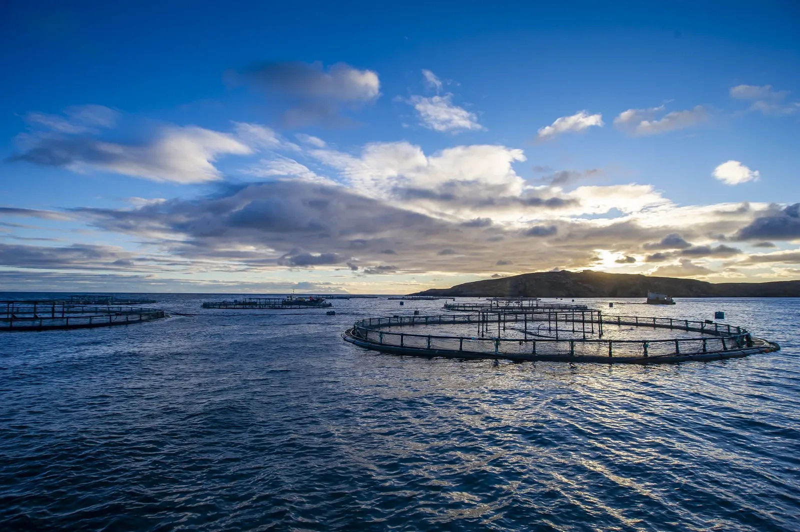
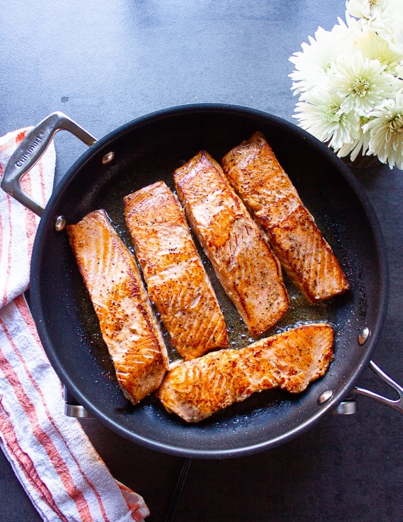
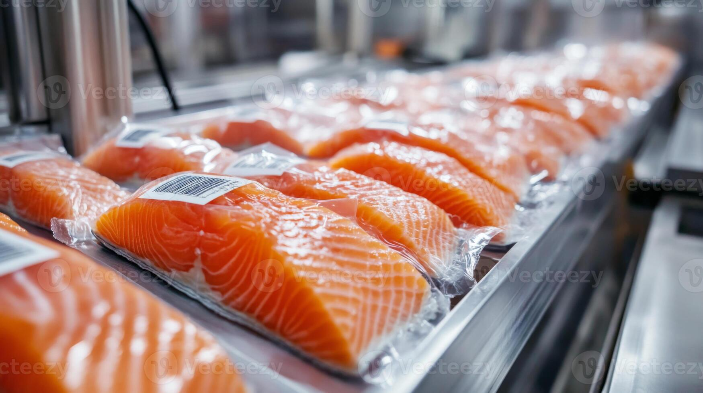
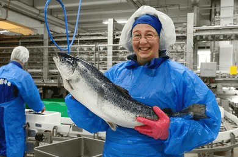

◎
深海养殖，源自全球
DEEP-SEA FARMING, GLOBAL SOURCING
甄选全球优质冷水海域，关注自然生长环境。

From the ocean to your table
Deep-Sea Farming,
Carefully Sourced Worldwide.
全球优选冷水海域，深海网箱养殖，在低密度及自然的环境中生长。
Selected cold-water seas. Carefully managed deep-sea farms.
GLOBAL SOURCING
甄选优质冷水海域，关注每一份原料的来源。
FULL COLD CHAIN
0–4°C 冷藏配送，守护产品的新鲜状态。
QUALITY PROCESSING
以规范流程和细致工艺，呈现稳定品质。

180g
净含量 / NET WEIGHT
The signature cut
Thick-Cut Salmon Fillets
Thick-Cut Middle Cut, Ready to Eat.
精选三文鱼中段，厚切呈现自然纹理与细腻油脂。开盒即可享用，让优质风味轻松融入日常。

Good food brings us together
Healthy Food, Happy Family.
把鲜美与安心带上餐桌，让每一次分享都成为温暖的日常。
Why Heath Creek
Carefully considered, from source to serving.
DEEP-SEA FARMING, GLOBAL SOURCING
甄选全球优质冷水海域，关注自然生长环境。
FULL COLD CHAIN, SEAMLESS DELIVERY
以 0–4°C 冷藏运输流程，守护新鲜品质。
FACTORY PROCESSING, QUALITY ASSURED
规范加工流程，注重每一处产品细节。

Origin traceability
Deep-Sea Farming, Carefully Sourced Around the World.
全球优选冷水海域，深海网箱养殖，在低密度及自然的环境中生长。
Selected cold-water seas worldwide, with salmon raised in deep-sea pens in a low-density environment.
A closer look
Selected Middle Cut, Even Fat Marbling.
我们选取三文鱼中最精华的部分，去刺去骨，精修 E 级。细腻纹理与均匀油脂，呈现自然鲜亮的色泽。
产品执行标准及适用人群请以实际包装标识和检测信息为准。生食相关表述须以产品合规证明为依据。

Serving inspiration
Two Simple Ways to Enjoy.
01 / SASHIMI
Ready to enjoy as sashimi.
搭配酱油与山葵酱，简单享受三文鱼的鲜美风味。

02 / PAN-FRIED
A simple pan-fried option.
无需复杂调味，根据鱼片厚度与熟度需求充分煎熟后享用。
烹饪时间会因设备、火力及产品厚度而异，请确保充分加热。
Protected freshness
Premium Packaging, Full Cold Chain.
盒装产品搭配保温外箱与冰袋，采用 0–4°C 冷藏配送方案。包装细节清晰呈现，让每一次收货都更安心。

独立盒装
Individual product box
冰袋保温
Insulated with ice packs

Quality assurance
Direct Global Sourcing, Controlled Quality.
全球源头直采，通过三次检验检疫，采用 0–4°C 冷链体系配送。以清晰流程管理产品品质。
生鲜短保产品不支持 7 天无理由退货。如收到化冻、破损或变质等情况，请在签收后 12 小时内拍照并联系客服，具体售后规则以店铺公示为准。
Need to know
Frequently Asked Questions
不建议。请在 0–4°C 冷藏保存，建议 5 天内食用；开封后请当日食用。具体以包装标示为准。
产品风味会因原料与个人感受有所不同。如对气味敏感，可按产品说明处理后再食用。
儿童食用请结合年龄及身体情况。孕妇、3 岁以下婴幼儿及免疫力较弱人群不建议生食，充分加热更稳妥。
请以产品包装、检测报告及适用标准标示为准。孕妇、婴幼儿及免疫力较弱人群建议熟食。
净含量为 180 克 / 盒。Net weight: 180g per box.